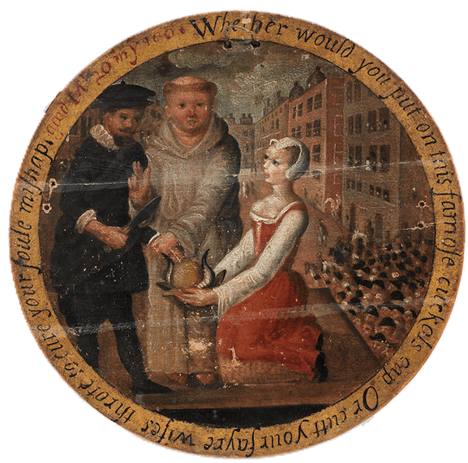
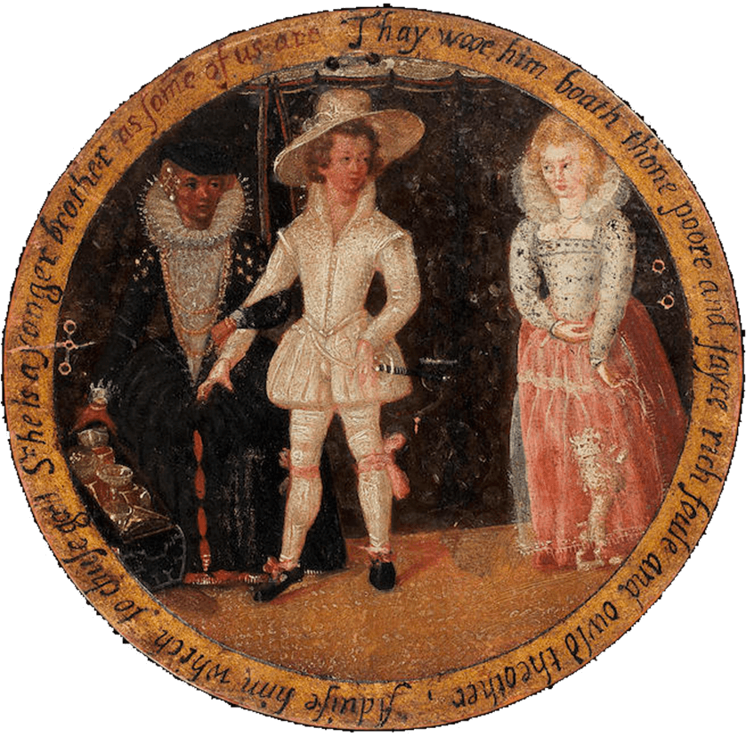

The Taming of the Shrew
this is just filler
INDUCTION
Scene I
Enter Beggar (Christopher Sly) and Hostess.
SLY I’ll feeze you, in faith.

HOSTESS A pair of stocks, you rogue!
SLY You’re a baggage! The Slys are no rogues. Look
Therefore, paucas pallabris, let the world
slide. Sessa!
HOSTESS You will not pay for the glasses you have
burst?
SLY No, not a denier. Go, by Saint
Jeronimy! Go to
thy cold bed and warm thee. He lies down.
HOSTESS I know my remedy. I must go fetch the
headborough. She exits.
SLY Third, or fourth, or fifth borough, I’ll answer him
by law. I’ll not budge an inch, boy. Let him come,
and kindly. Falls asleep.

Wind horns within. Enter a Lord from hunting, with his train.
LORD
Huntsman, I charge thee tender well my hounds.
Breathe Merriman (the poor cur is embossed)
And couple Clowder with the deep-mouthed brach.
Saw’st thou not, boy, how Silver made it good
At the hedge corner, in the coldest fault?
I would not lose the dog for twenty pound!
FIRST HUNTSMAN
Why, Bellman is as good as he, my lord.
He cried upon it at the merest loss,
And twice today picked out the dullest scent.
Trust me, I take him for the better dog.
LORD
Thou art a fool. If Echo were as fleet,
I would esteem him worth a dozen such.
But sup them well, and look unto them all.
Tomorrow I intend to hunt again.
 FIRST HUNTSMAN I will, my lord.
FIRST HUNTSMAN I will, my lord.
First Huntsman exits.
LORD, noticing Sly
What’s here? One dead, or drunk? See doth he
breathe.
SECOND HUNTSMAN
He breathes, my lord. Were he not warmed
with ale,
This were a bed but cold to sleep so
soundly.
LORD
O monstrous beast, how like a swine he lies!
Grim death, how foul and loathsome is thine image!
Sirs, I will practice on this drunken man.
What think you, if he were conveyed to bed,
Wrapped in sweet clothes, rings put upon his
fingers,
A most delicious banquet by his bed,
And brave attendants near him when he wakes,
Would not the beggar then forget himself?
THIRD HUNTSMAN
Believe me, lord, I think he cannot choose.
SECOND HUNTSMAN
It would seem strange unto him when he waked.
 LORD
Even as a flatt’ring dream or worthless fancy.
LORD
Even as a flatt’ring dream or worthless fancy.
Then take him up, and manage well the jest.
Carry him gently to my fairest chamber,
And hang it round with all my wanton pictures;
Balm his foul head in warm distillèd waters,
And burn sweet wood to make the lodging sweet;
Procure me music ready when he wakes
To make a dulcet and a heavenly sound.
And if he chance to speak, be ready straight
And, with a low, submissive reverence,
Say “What is it your Honor will command?”
Let one attend him with a silver basin
Full of rosewater and bestrewed with flowers,
Another bear the ewer, the third a diaper,
And say “Will ’t please your Lordship cool your
hands?”
Someone be ready with a costly suit,
And ask him what apparel he will wear.
Another tell him of his hounds and horse,
And that his lady mourns at his disease.
Persuade him that he hath been lunatic,
And when he says he is, say that he dreams,
For he is nothing but a mighty lord.
This do, and do it kindly, gentle sirs.
It will be pastime passing excellent
If it be husbanded with modesty.
THIRD HUNTSMAN
My lord, I warrant you we will play our part
As he shall think by our true diligence
He is no less than what we say he is.
LORD
Take him up gently, and to bed with him,
And each one to his office when he wakes.
Sly is carried out.
Sound trumpets within.
Sirrah, go see what trumpet ’tis that sounds.
Servingman exits.
Belike some noble gentleman that means
(Traveling some journey) to repose him here.
Enter Servingman.
How now? Who is it?
SERVINGMAN An ’t please your Honor, players
That offer service to your Lordship.
LORD
Bid them come near.
Enter Players.
Now, fellows, you are welcome.
PLAYERS We thank your Honor.
LORD
Do you intend to stay with me tonight?
FIRST PLAYER
So please your Lordship to accept our duty.
LORD
With all my heart. This fellow I remember
Since once he played a farmer’s eldest son.—
’Twas where you wooed the gentlewoman so well.
I have forgot your name, but sure that part
Was aptly fitted and naturally performed.
SECOND PLAYER
I think ’twas Soto that your Honor means.
LORD
’Tis very true. Thou didst it excellent.
Well, you are come to me in happy time,
The rather for I have some sport in hand
Wherein your cunning can assist me much.
There is a lord will hear you play tonight;
But I am doubtful of your modesties,
Lest, over-eying of his odd behavior
(For yet his Honor never heard a play),
You break into some merry passion,
And so offend him. For I tell you, sirs,
If you should smile, he grows impatient.
FIRST PLAYER
Fear not, my lord, we can contain ourselves
Were he the veriest antic in the world.
LORD, to a Servingman
Go, sirrah, take them to the buttery
And give them friendly welcome every one.
Let them want nothing that my house affords.
One exits with the Players.
Sirrah, go you to Bartholomew, my page,
And see him dressed in all suits like a lady.
That done, conduct him to the drunkard’s chamber,
And call him “Madam,” do him obeisance.
Tell him from me, as he will win my love,
He bear himself with honorable action,
Such as he hath observed in noble ladies
Unto their lords, by them accomplishèd.
Such duty to the drunkard let him do
With soft low tongue and lowly courtesy,
And say “What is ’t your Honor will command,
Wherein your lady and your humble wife
May show her duty and make known her love?”
And then with kind embracements, tempting kisses,
And with declining head into his bosom,
Bid him shed tears, as being overjoyed
To see her noble lord restored to health,
Who, for this seven years, hath esteemed him
No better than a poor and loathsome beggar.
And if the boy have not a woman’s gift
To rain a shower of commanded tears,
An onion will do well for such a shift,
Which (in a napkin being close conveyed)
Shall in despite enforce a watery eye.
See this dispatched with all the haste thou canst.
Anon I’ll give thee more instructions.
A Servingman exits.
I know the boy will well usurp the grace,
Voice, gait, and action of a gentlewoman.
I long to hear him call the drunkard “husband”!
And how my men will stay themselves from
laughter
When they do homage to this simple peasant,
I’ll in to counsel them. Haply my presence
May well abate the over-merry spleen
Which otherwise would grow into extremes.
They exit.
ACT V
Scene II
Fie, fie! Unknit that threat’ning unkind brow,
And dart not scornful glances from those eyes
To wound thy lord, thy king, thy governor.
It blots thy beauty as frosts do bite the meads,
Confounds thy fame as whirlwinds shake fair buds,
And in no sense is meet or amiable.
A woman moved is like a fountain troubled,
Muddy, ill-seeming, thick, bereft of beauty,
And while it is so, none so dry or thirsty
Will deign to sip or touch one drop of it.
Thy husband is thy lord, thy life, thy keeper,
Thy head, thy sovereign, one that cares for thee,
And for thy maintenance commits his body
To painful labor both by sea and land,
To watch the night in storms, the day in cold,
Whilst thou liest warm at home, secure and safe,
And craves no other tribute at thy hands
But love, fair looks, and true obedience—
Too little payment for so great a debt.
Such duty as the subject owes the prince,
Even such a woman oweth to her husband;
And when she is froward, peevish, sullen, sour,
And not obedient to his honest will,
What is she but a foul contending rebel
And graceless traitor to her loving lord?
I am ashamed that women are so simple
To offer war where they should kneel for peace,
Or seek for rule, supremacy, and sway
When they are bound to serve, love, and obey.
Why are our bodies soft and weak and smooth,
Unapt to toil and trouble in the world,
But that our soft conditions and our hearts
Should well agree with our external parts?
Come, come, you froward and unable worms!
My mind hath been as big as one of yours,
My heart as great, my reason haply more,
To bandy word for word and frown for frown;
But now I see our lances are but straws,
Our strength as weak, our weakness past compare,
That seeming to be most which we indeed least are.
Then vail your stomachs, for it is no boot,
And place your hands below your husband’s foot;
In token of which duty, if he please,
My hand is ready, may it do him ease.
Deliver your judgement here!